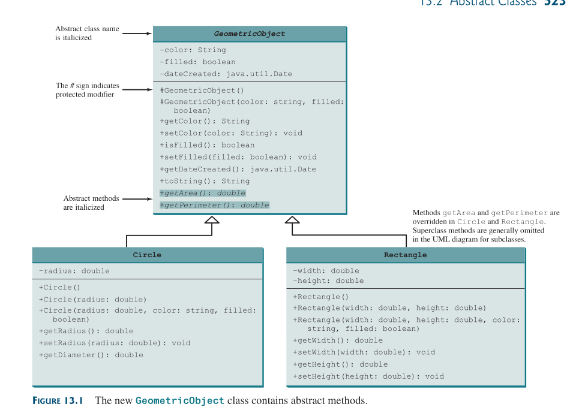

Introducing Abstract Classes
Introducing Abstract Classes
An abstract class cannot be used to create objects.
An abstract class is a class declared with the abstract modifier that cannot be instantiated directly and may contain abstract methods that are implemented in concrete subclasses.
An abstract class is most commonly used when you want another class to inherit properties of a particular class, but you want the subclass to fill in some of the implementation details.
In the inheritance hierarcy, classes become more specific and concrete with each new subclass.
If you move from a subclass back up to a superclass, the classes become more general and less specific.
Class design should ensure a superclass contains common features of its subclasses.
Sometimes, a superclass is so abstract it cannot be used to create any specific instances.
Such a class is referred to as an abstract class.
Example
public abstract class Canine {} public class Wolf extends Canine {} public class Fox extends Canine {} public class Coyote extends Canine {}
An abstract class can contain abstract methods.
An abstract method is a method declared with the abstract modifier that does not define a body.
Put in another way, an abstract methods forces subclasses to override the method.
Why would we want this? polymorphism, of course!
By declaring a method abstract, we can guarantee that some version will be available on an instance without having to specify what that version is in the abstract parent class
Example
public abstract class GeometricObjectv2 { private String color = "white"; private boolean filled; private java.util.Date dateCreated; protected GeometricObjectv2() { dateCreated = new java.util.Date(); } protected GeometricObjectv2(String color, boolean filled) { dateCreated = new java.util.Date(); this.color = color; this.filled = filled; } public String getColor() { return color; } public void setColor(String color) { this.color = color; } public boolean isFilled() { return filled; } public void setIsFilled(boolean filled) { this.filled = filled; } public java.util.Date getDateCreated() { return dateCreated; } @Override public String toString() { return "created on " + dateCreated + "\ncolor: " + color + " and filled: " + filled; } public abstract double getArea(); public abstract double getPerimeter(); public static void main(String[] args) { } }
Abstract classes are denoted using the abstract modifier in the class header.
In UML the names of abstract classes and their abstract methods are italicized:

The constructor in the abstract class is defined as protected because it is used only by subclasses.
When you create an instance of a concrete subclass, its superclass’s constructor is invoked to initialize data fields defined in the superclass.
The GeometricObject abstract class defines the common features (data and methods) for geometric objects and provides appropriate constructors.
Because you don’t know how to compute areas and perimeters of geometric objects, getArea() and getPerimeter() are defined as Abstract Methods.
These methods are implemented in the subclasses.
The implementation of Circle and Rectangle:
public class Circle extends GeometricObject { // Same as lines 2−47 in Listing 11.2, so omitted } public class Rectangle extends GeometricObject { // Same as lines 2−49 in Listing 11.3, so omitted }
Rules
Abstract classesare like regularclasses, but you cannot createinstancesofabstract classesusing thenewoperator.- Only
instancemethods can be marked abstract within aclass, not variables, constructors, or static methods. - Abstract methods can only be declared in an
abstract class. - A nonabstract (Concrete)
classthat extends anabstract classmust implement all inherited abstract methods. - Overriding an abstract method follows the existing rules for overriding methods.
Why Abstract Methods?
You may be wondering what advantage is gained by defining the methods getArea() and getPerimeter() as abstract in the GeometricObject class.
Example
The code below shows the benefits of defining them in the GeometricObject class.
The program creates two geometric objects, a circle and a rectangle, invokes the equalArea method to check whether they have equal areas, and invokes the displayGeometricObject method to display them.
public class TestGeometricObject { public static void main(String[] args) { // Create two geometric objects GeometricObject geoObject1 = new Circle(5); GeometricObject geoObject2 = new Rectangle(5, 3); System.out.println("The two objects have the same area? " + equalArea(geoObject1, geoObject2)); // Display circle displayGeometricObject(geoObject1); // Display rectangle displayGeometricObject(geoObject2); } // A method for comparing the areas of two geometric objects public static boolean equalArea(GeometricObject object1, GeometricObject object2) { return object1.getArea() == object2.getArea(); } // A method for displaying a geometric object public static void displayGeometricObject(GeometricObject object) { System.out.println(); System.out.println("The area is " + object.getArea()); System.out.println("The perimeter is " + object.getPerimeter()); } }
- Output
The two objects have the same area? false The area is 78.53981633974483 The perimeter is 31.41592653589793 The area is 15.0 The perimeter is 16.0The methods
getArea()andgetPerimeter()defined in theGeometricObjectclass are overridden in theCircleandRectangle class.The statements
GeometricObject geoObject1 = new Circle(5); GeometricObject geoObject2 = new Rectangle(5, 3);
create a new
circleandrectangleand assign them to the variablesgeoObject1andgeoObject2.These two variables are of the
GeometricObjecttype.When invoking
equalArea(geoObject1, geoObject2):- The
getArea()method defined in theCircle classis used forobject1.getArea()sincegeoObject1is-acircle. - The
getArea()method defined in theRectangle classis used forobject2.getArea()sincegeoObject2is-arectangle.
Similarly:
- when invoking
displayGeometricObject(geoObject1)the methodsgetArea()andgetPerimeter()defined in theCircle classare used. - when invoking
displayGeometricObject(geoObject2)the methodsgetArea()andgetPerimeter()defined in theRectangle classare used.
- The
- Note
- The JVM dynamically determines which of these methods to invoke at runtime, depending on the
actual objectthat invokes the method. - You could not define the
equalAreamethod for comparing whether twogeometric objectshave the same area if thegetAreamethod was not defined inGeometricObject(sinceobject1andobject2are of theGeometricObjecttype).
- The JVM dynamically determines which of these methods to invoke at runtime, depending on the
Error
If you attempt to instantiate it, the compiler will report an exception:
abstract class Alligator { public static void main(String... food) { var a = new Alligator(); // DOES NOT COMPILE } }
An abstract class can be initialized, but only as part of the instantiation of a non-abstract subclass.